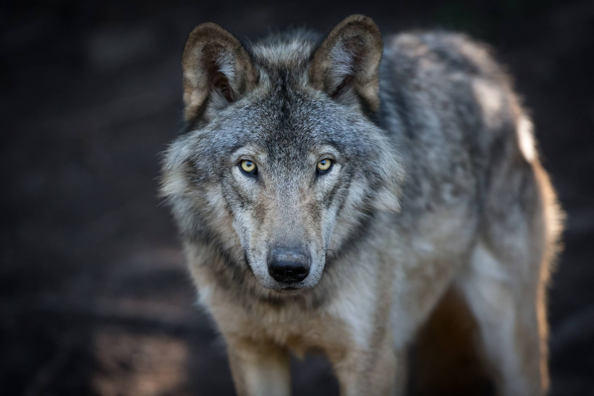

Šedý vlk má mohutné tělo pokryté hustou šedou srstí, která mu pomáhá maskovat se v lese. Jeho oči jsou žluté a pronikavé, často vyzařující inteligenci a odhodlání. Vlci mají dlouhé nohy a silné packy, díky nimž jsou výborní běžci a lovci. Charakteristickou vlastností je jeho hučivý štěkot, kterým komunikuje se svými smečkami. Šedý vlk je symbolem síly, svobody a tajemna v mnoha mytologiích a legendách. Je obvykle společenský tvor, který žije ve smečkách, jež si vytvářejí pevné pouto. Jeho vnímavé smysly mu umožňují sledovat kořist na velké vzdálenosti a být tak výborným lovcem. V přírodě se šedý vlk často pohybuje v odlehlých oblastech, kde je méně lidí a více divoké krajiny.